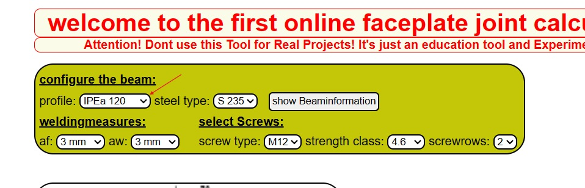
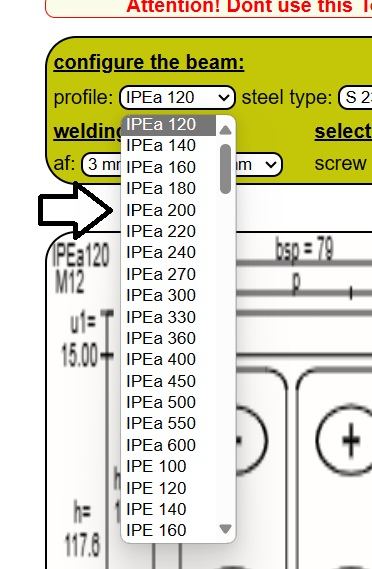

Benutzerhandbuch StirnplattenStoß
Zunächst sollte der Anwender seine gewünschte Sprache einstellen
Dies geschieht einfach durch anklicken der jeweiligen Länderflagge ganz oben links

dazu kann man einfach auf das Feld neben "Iprofil" klicken.
es öffnet sich ein Dropdownmenü mit 150 verschiedenen Stahlprofilen,
hier kann man durch klicken auswählen welches Profil verwendet werden soll,
der Aufmerksame Nutzer wird merken dass sich dabei direkt in der Zeichenebene (Canvas) das Bild anpasst


Ist man sich unsicher bezüglich der Daten des Profils,
lässt sich nach Auswahl eines Profils der Knopf(Button) show Beamdata anklicken
nun bekommt man die verschiedene Werte seines gewählten Profils angezeigt:

die Höhe des profils ist bei der Ausgabe h: 150 (zum beispiel bei einem Profil mit 150mm Höhe)
sämtliche Angaben sind also in mm hier ein Index welcher Buchstabe welchem Wert entspricht:
h = Gesamthöhe des Profils
b = Gesamtbreite des Profils,
tw = Dicke des Trägerstegs;
tf = Dicke des Trägerflansch
r = Radius der Kreiszwickel;
Iy = Flächenträgheitsmoment;
Wely = elastisches Widerstandsmoment des Profils;
Wply = plastisches Widerstandsmoment des Profils;
Sy = Statisches Moment des Profils;
Avz = Fläche welche für Schubbeanspruchng durch Vz rechnerisch angesetzt wird.
Nach selbem Verfahren wie oben lässt sich auch die Stahlgüte wählen.
Auch die Schweißnähte lassen sich über ein ebensolches Dropdownmenü auswählen
wobei af der Schweißnahtdicke am Flansch entspricht
aw der Schweißnahtdicke am Steg.
Ebenfalls wieder duruch klicken der Felder und Auswählen im sich dabei öffnenden Menü lassen sich die Schrauben konfigurieren.

Bei Auswahl des Schraubentyps wählt man aus genormten Schraubenmaßen.
Dabei lässt sich auch direkt eine Veränderung im Canvas (Zeichenausgabe) beobachten.
Die dort dargestellten Kreise Spiegeln die Unterlegscheiben wieder,.
Man sollte darauf achten , dass diese Kreise keine Anderen Linien schneiden
um das zu vermeiden könnte der Nutzer entweder die Maße wie zb Abstände profile etc.ändern oder kleinere Schrauben wählen.
Zwar wurden entsprechende Sicherheitsprogramme geschreiben welche Die vom Nutzer eingegebenen Parameter überprüfen sodass eine Warnung kommt: Berechnung nicht möglich weil....
Für einen komfortableres Erlebnis mit BöttcherBemessungSoftware empfehlen wir jedoch selbst direkt im Canvas (Zeichenfenster ) seinen Anschluss zu überprüfen.
Zuletzt lässt sich noch die Festigkeitsklasse der Schrauben wählen
Unter dem Reiter ScrewRows oder Schraubenreihen auf deutsch lassen sich die Anzahl schraubenreihen auswählen , hierbei ist eine unmittelbare Veränderung im Canvas sichtbar
Wie unschwer zu erkennen ist wurde das Programm so geschrieben,
dass es bereits nur anhand der Auswahl von Profilen und Schrauben einen Konstruktionsvorschlag macht
also automatisch eine Stirnplatte berechnet sowie Schraubenabstände die für das Profil passend wären mit denen man Rechnen könnte.
Natürlich kann man aber auch die Maße der Stirnplatte, sowie die verschiedenen Schraubenabstände selbst wählen
hierzu dienen die Eingabefelder:
hsp; bsp; tsp; u1n; e; go; gu;
und bei Auswahl von 3 Schraubenreihen das sich dabei neu öffnende Eingabefenster ex.
In die Eingabefenster dürfen nur Zahlen eingegeben werden.
Dabei ist die Einheit immer in mm
Wichtig für Nicht-statiker:
hsp = Höhe der Stirnplatte -> Diese Höhe muss stehts höher bzw. mindestens so Hoch wie das gewählte Profil sein im Zweifelsfall also nochmal auf den Button showbeamdata klicken und schauen was dort h anzeigt
bsp = Breite der Stirnplatte -> Diese Breite muss stehts breiter als die Breite des gewählten Profil sein im Zweifelsfall also nochmal Show Beamdata anklicken und schauen welchen Wert b hat.
tsp = Breite der Stirnplatte -> übliche Werte wären hier zwischen 10-45 mm
u1n = Der abstand des Unteren FLanschendes zum Unteren Rand der Stirnplatte
e = horizonzaler Abstand des Mittelpunktes Der Schraubenbohrung zur Stirnplatte
go = vertikaler Abstand des Mittelpunktes der Schraubenbohrung(innere Schrauben oben) zur oberen Flanschaußenkante des Profils
gu = vertikaler Abstand des Mittelpunktes der Schraubenbohrung (innere Schrauben unten) zur unteren Flanschaußenkante des Profil
Für nicht Statiker die sich an diesem Programm versuchen wollen und eine Orientierung brauchen in welchen Größenordnungen die Zahlen sein müssten welche sie Eingeben sollen bei den jeweiligen Eingabefeldern der Maße empfiehlt sich ein Blick auf das Canvas bei Neuladen der Seite
Lädt man die Seite neu und tätigt keine Eingaben lassen sich in dem Bild sämtliche Abstände sehen mitsamt deren Abkürzung und des entsprechenden Wertes
Nun lassen sich noch die Ermittelten Schnittgrößen eingeben welche An der Stelle des Anschlusses wirken , dabei steht Med für das Bemessungsmoment und Ved für die Bemessungsquerkraft
Hat man nun alle Eingaben getätigt kann man auf den Button(Knopf) start calculation bzw. "hier klicken für Ergebnisse" klicken